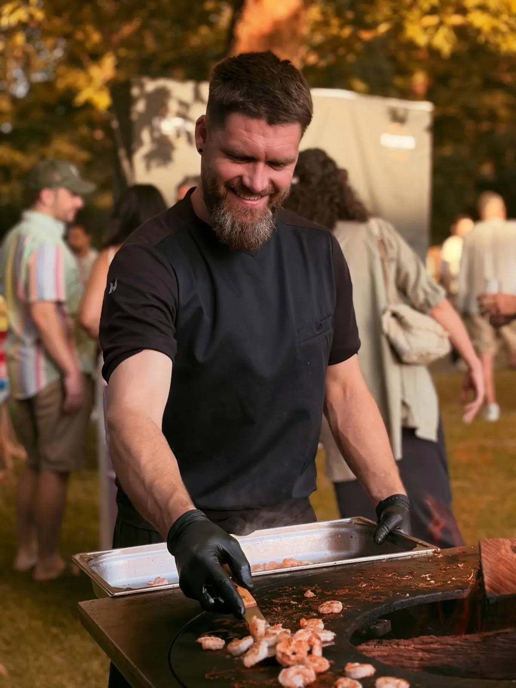
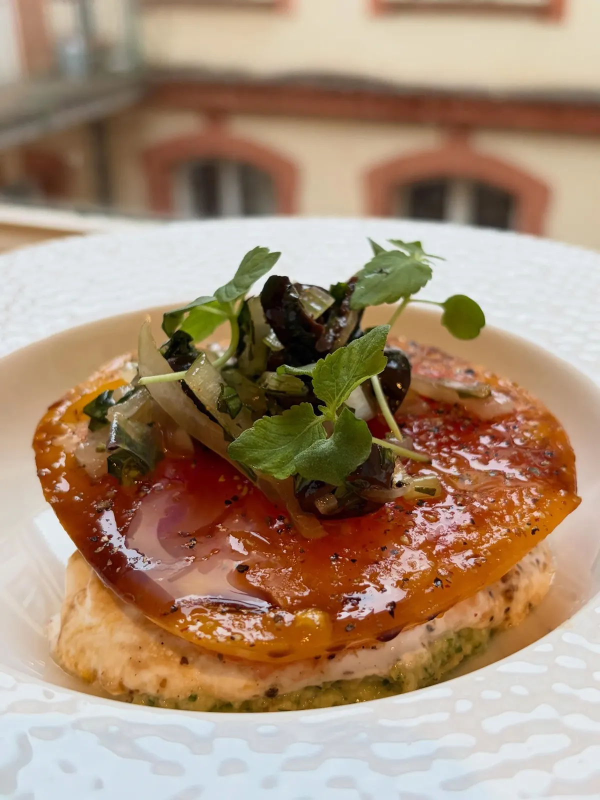
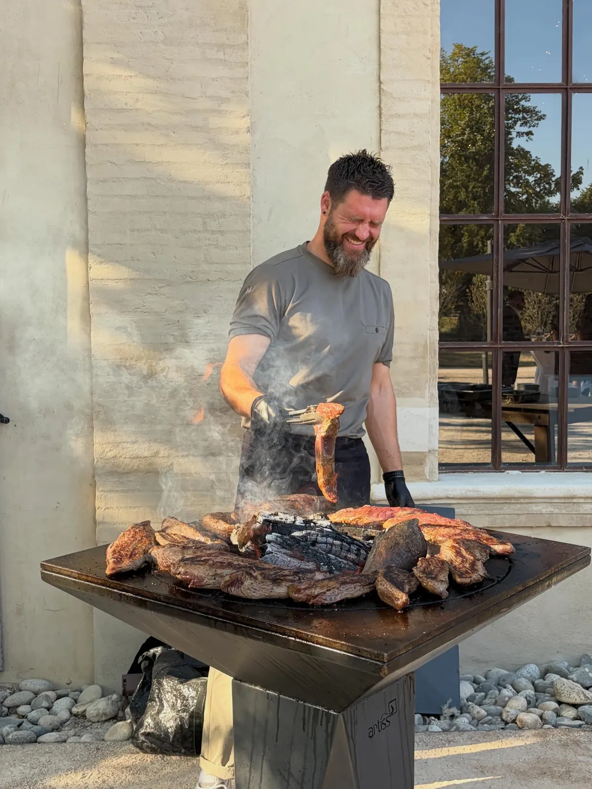
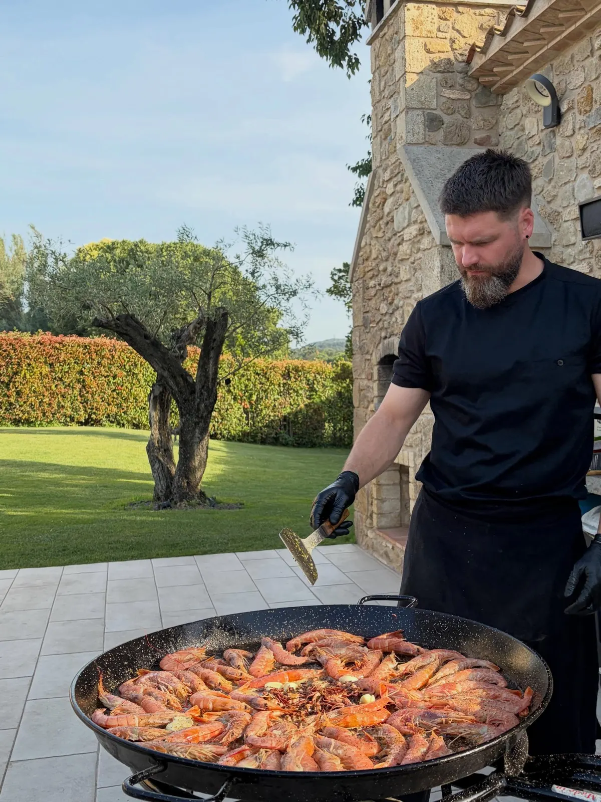
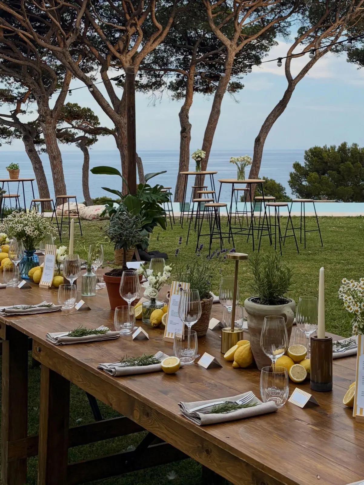
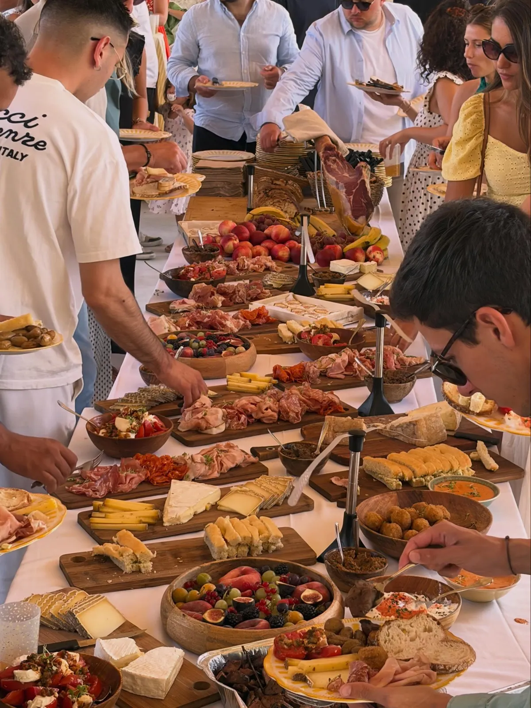
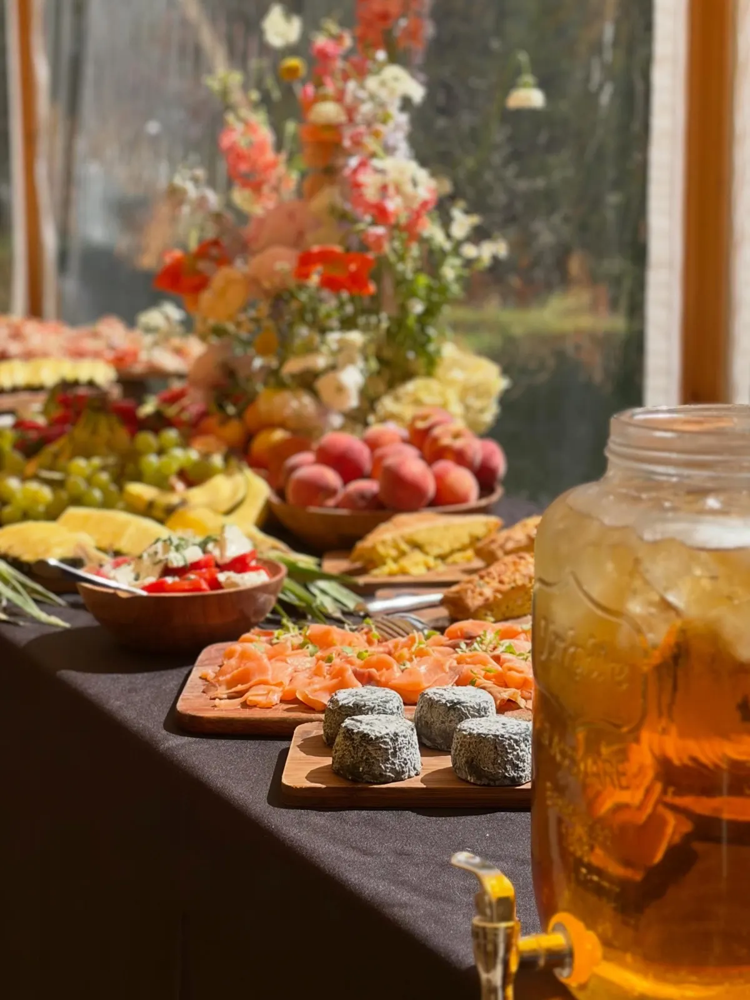
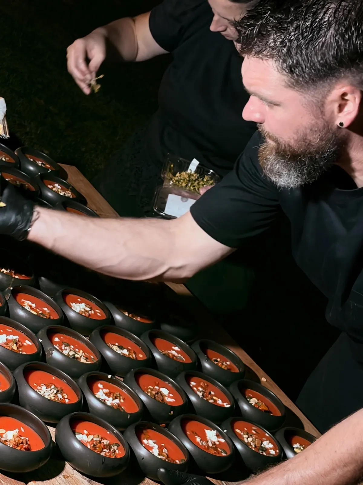
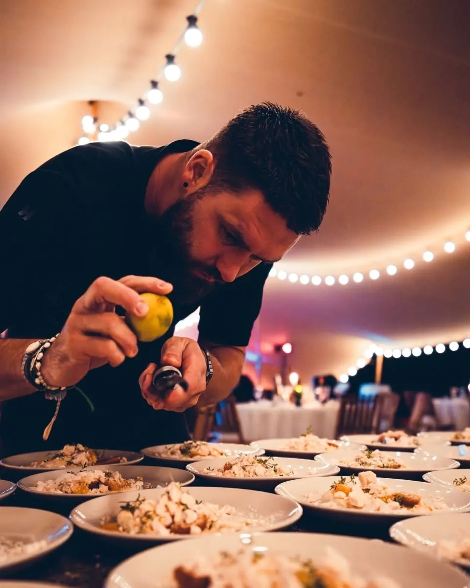
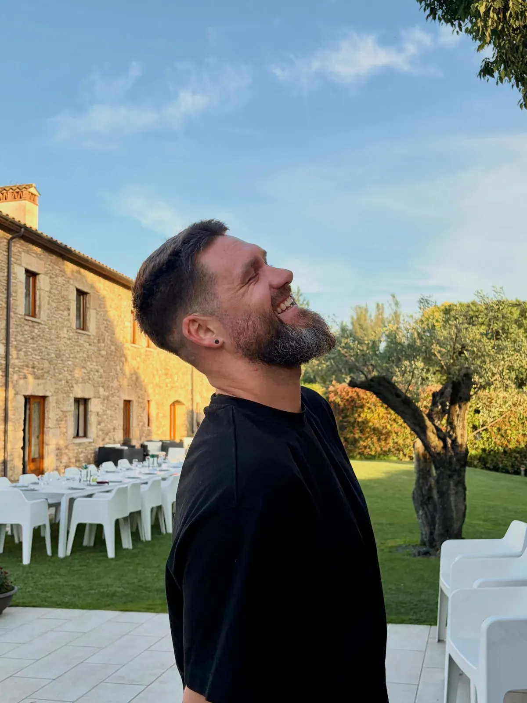

Un repas de chef, sans quitter la maison.


Florent Pineau, chef à domicile à Toulouse. Il se déplace et cuisine chez vous : plancha, paella géante, planches à partager, cocktails dînatoires et séminaires.
- Chef à domicileet traiteur, Toulouse
- 5,0 sur 5 sur Google63 avis
- Tous les joursjoignable de 8 h à 23 h
- Plancha et paellacuites devant vos invités
Le chef vient, la cuisine se fait chez vous
Florent se déplace et cuisine sur place : au jardin, en terrasse, au domaine ou en bord de mer.
La plancha
Gambas et viandes saisies devant les invités.
Le brasero
Grandes pièces grillées sur le feu, en plein air.
La paella géante
Une poêle immense de gambas, à partager au jardin.
Les assiettes
Entrées dressées une à une, desserts aux fraises et meringue.


Envie d'un repas confectionné par un chef tout en restant chez vous ? C'est possible !Florent Pineau, Cook House

Une longue table, la mer au fondPlanches à partager et grands buffets
Charcuteries, fromages, légumes, fruits et bouquets : des tables généreuses où chacun se sert. En ce moment, des couleurs d'automne sur les planches.
- Cœur d'artichaut teriyaki
- Pesto de roquette et pistache
- Tomates rôties


Cocktails, séminaires et grandes soirées
Du cocktail dînatoire au séminaire de plusieurs jours, Florent cuisine pour les grandes tablées, jusqu'aux dizaines de cocottes dressées à la nuit tombée.
L'atelier découpe de jambon
Un incontournable pour vos cocktails dînatoires. La découpe de jambon, tout un art.
Les séminaires
Comme pour Naka Conseil cet automne : quelques jours placés sous le signe du partage et de la gourmandise
.


Parlons de votre repas
Un dîner, une fête, un séminaire : appelez Florent ou écrivez-lui.

Tous les jours
8 h à 23 h
Chef à domicile
Toulouse (31000)